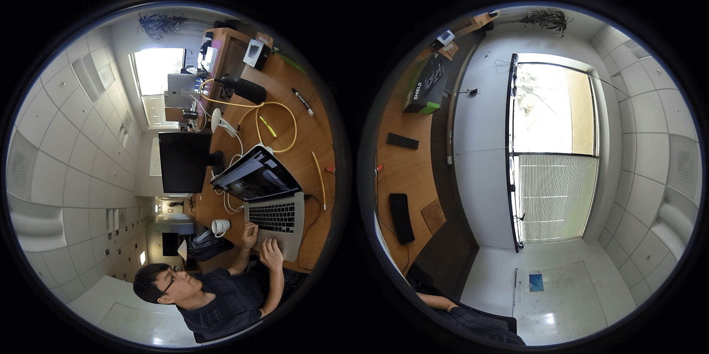

<html>
<head>
    <title>Fisheye WebGL</title>
</head>
<!--<hr>
-->
<hr>
<canvas id="canvas" width="1920" height="960" />

<!-- vertex shader -->
<script id="2d-vertex-shader" type="x-shader/x-vertex">
attribute vec2 a_position;
attribute vec2 a_texCoord;

uniform vec2 u_resolution;

varying vec2 v_texCoord;

void main() {
   // convert the rectangle from pixels to 0.0 to 1.0
   vec2 zeroToOne = a_position / u_resolution;

   // convert from 0->1 to 0->2
   vec2 zeroToTwo = zeroToOne * 2.0;

   // convert from 0->2 to -1->+1 (clipspace)
   vec2 clipSpace = zeroToTwo - 1.0;

   gl_Position = vec4(clipSpace * vec2(1, -1), 0, 1);

   // pass the texCoord to the fragment shader
   // The GPU will interpolate this value between points.
   v_texCoord = a_texCoord;
}
</script>
<!-- fragment shader -->
<script id="2d-fragment-shader" type="x-shader/x-fragment">
precision highp float;

// our texture
uniform sampler2D u_image;

// the texCoords passed in from the vertex shader.
varying vec2 v_texCoord;
uniform mat3 tilt;

const float M_PI = 3.14159265358979;
const float M_PI2 = M_PI / 2.0;
const float M_2PI = M_PI*2.0;


void main() {
  /*
    float theta0 = M_PI2 - M_PI * v_texCoord.y;
    float phi0 = M_2PI * v_texCoord.x;
    float cosTheta = cos(theta0);
    vec3 p = tilt * vec3(cosTheta * cos(phi0), sin(theta0), cosTheta * sin(phi0));
    if (p.y > 1.0)
        p.y = 1.0;
    if (p.y < -1.0)
        p.y = -1.0;
    float theta = asin(p.y);
    float phi = atan(p.z, p.x);
    vec2 q = vec2(mod(phi / M_2PI, 1.0), 0.5 - theta / M_PI);
    gl_FragColor = texture2D(u_image, q);
    */


  vec2 pfish;
	float theta,phi,r;
	vec3 psph;

	float FOV = 3.141592654; // FOV of the fisheye, eg: 180 degrees
  float x = v_texCoord.x;
  float y = v_texCoord.y;
  if (v_texCoord.x > 0.5) {
    x -= 0.5;
  }
  x = x*2.0;

	// Polar angles
	theta = 2.0 * 3.14159265 * (x - 0.5); // -pi to pi
	phi = 3.14159265 * (y - 0.5);	// -pi/2 to pi/2

	// Vector in 3D space
	psph.x = cos(phi) * sin(theta);
	psph.y = cos(phi) * cos(theta);
	psph.z = sin(phi);

	// Calculate fisheye angle and radius
	theta = atan(psph.z,psph.x);
	phi = atan(sqrt(psph.x*psph.x+psph.z*psph.z),psph.y);
	r = 0.5 * phi / FOV;

	// Pixel in fisheye space
	pfish.x = 0.25 + r * cos(theta);
	pfish.y = 0.5 + r * sin(theta);

  if (v_texCoord.x > 0.5) {
    pfish.x += 0.5;
  }

	gl_FragColor = texture2D(u_image, pfish);


   //gl_FragColor = texture2D(u_image, v_texCoord);
}
</script>


<!--<script src="http://learningwebgl.com/lessons/lesson05/glMatrix-0.9.5.min.js"></script>-->
<script src="https://cdnjs.cloudflare.com/ajax/libs/gl-matrix/2.3.2/gl-matrix-min.js"></script>
<!--<script src="http://learningwebgl.com/lessons/lesson05/webgl-utils.js"></script>-->
<script src="https://webglfundamentals.org/webgl/resources/webgl-utils.js"></script>
<script src="https://webglfundamentals.org/webgl/resources/webgl-lessons-helper.js"></script>
<script>
function main() {
  // var image = document.getElementById('image');
    var image = document.createElement('img');
    image.src = './test360.png';
//   image.src = "https://webglfundamentals.org/webgl/resources/leaves.jpg";  // MUST BE SAME DOMAIN!!!
  image.onload = function() {
    render(image);
  }
}

function render(image) {
  // Get A WebGL context
  /** @type {HTMLCanvasElement} */
  var canvas = document.getElementById("canvas");
  var gl = canvas.getContext("webgl");
  if (!gl) {
    return;
  }

  // setup GLSL program
  var program = webglUtils.createProgramFromScripts(gl, ["2d-vertex-shader", "2d-fragment-shader"]);

  // look up where the vertex data needs to go.
  var positionLocation = gl.getAttribLocation(program, "a_position");
  var texcoordLocation = gl.getAttribLocation(program, "a_texCoord");

  var M_PI = 3.14159265358979;
  var normalMatrix = mat3.create();
  mat3.identity(normalMatrix);
  mat3.rotate(normalMatrix, normalMatrix, -0);
  mat3.scale(normalMatrix, normalMatrix, [1, 1]);
  // normalMatrix[0] = 1;
  // normalMatrix[4] = 1;
  // normalMatrix[8] = 1;
  var tilt = gl.getUniformLocation(program, "tilt");

  // Create a buffer to put three 2d clip space points in
  var positionBuffer = gl.createBuffer();

  // Bind it to ARRAY_BUFFER (think of it as ARRAY_BUFFER = positionBuffer)
  gl.bindBuffer(gl.ARRAY_BUFFER, positionBuffer);
  // Set a rectangle the same size as the image.
  setRectangle(gl, 0, 0, image.width, image.height);

  // provide texture coordinates for the rectangle.
  var texcoordBuffer = gl.createBuffer();
  gl.bindBuffer(gl.ARRAY_BUFFER, texcoordBuffer);
  gl.bufferData(gl.ARRAY_BUFFER, new Float32Array([
      0.0,  0.0,
      1.0,  0.0,
      0.0,  1.0,
      0.0,  1.0,
      1.0,  0.0,
      1.0,  1.0,
  ]), gl.STATIC_DRAW);

  // Create a texture.
  var texture = gl.createTexture();
  gl.bindTexture(gl.TEXTURE_2D, texture);

  // Set the parameters so we can render any size image.
  gl.texParameteri(gl.TEXTURE_2D, gl.TEXTURE_WRAP_S, gl.CLAMP_TO_EDGE);
  gl.texParameteri(gl.TEXTURE_2D, gl.TEXTURE_WRAP_T, gl.CLAMP_TO_EDGE);
  gl.texParameteri(gl.TEXTURE_2D, gl.TEXTURE_MIN_FILTER, gl.LINEAR);
  gl.texParameteri(gl.TEXTURE_2D, gl.TEXTURE_MAG_FILTER, gl.LINEAR);

  // Upload the image into the texture.
  gl.texImage2D(gl.TEXTURE_2D, 0, gl.RGBA, gl.RGBA, gl.UNSIGNED_BYTE, image);

  // lookup uniforms
  var resolutionLocation = gl.getUniformLocation(program, "u_resolution");

  webglUtils.resizeCanvasToDisplaySize(gl.canvas);

  // Tell WebGL how to convert from clip space to pixels
  gl.viewport(0, 0, gl.canvas.width, gl.canvas.height);

  // Clear the canvas
  gl.clearColor(0, 0, 0, 0);
  gl.clear(gl.COLOR_BUFFER_BIT);

  // Tell it to use our program (pair of shaders)
  gl.useProgram(program);

  gl.uniformMatrix3fv(tilt, false, normalMatrix);

  // Turn on the position attribute
  gl.enableVertexAttribArray(positionLocation);

  // Bind the position buffer.
  gl.bindBuffer(gl.ARRAY_BUFFER, positionBuffer);

  // Tell the position attribute how to get data out of positionBuffer (ARRAY_BUFFER)
  var size = 2;          // 2 components per iteration
  var type = gl.FLOAT;   // the data is 32bit floats
  var normalize = false; // don't normalize the data
  var stride = 0;        // 0 = move forward size * sizeof(type) each iteration to get the next position
  var offset = 0;        // start at the beginning of the buffer
  gl.vertexAttribPointer(
      positionLocation, size, type, normalize, stride, offset)

  // Turn on the teccord attribute
  gl.enableVertexAttribArray(texcoordLocation);

  // Bind the position buffer.
  gl.bindBuffer(gl.ARRAY_BUFFER, texcoordBuffer);

  // Tell the position attribute how to get data out of positionBuffer (ARRAY_BUFFER)
  var size = 2;          // 2 components per iteration
  var type = gl.FLOAT;   // the data is 32bit floats
  var normalize = false; // don't normalize the data
  var stride = 0;        // 0 = move forward size * sizeof(type) each iteration to get the next position
  var offset = 0;        // start at the beginning of the buffer
  gl.vertexAttribPointer(
      texcoordLocation, size, type, normalize, stride, offset)

  // set the resolution
  gl.uniform2f(resolutionLocation, gl.canvas.width, gl.canvas.height);

  // Draw the rectangle.
  var primitiveType = gl.TRIANGLES;
  var offset = 0;
  var count = 6;
  gl.drawArrays(primitiveType, offset, count);
}

function setRectangle(gl, x, y, width, height) {
  var x1 = x;
  var x2 = x + width;
  var y1 = y;
  var y2 = y + height;
  gl.bufferData(gl.ARRAY_BUFFER, new Float32Array([
     x1, y1,
     x2, y1,
     x1, y2,
     x1, y2,
     x2, y1,
     x2, y2,
  ]), gl.STATIC_DRAW);
}

main();
</script>

</body>
</html>